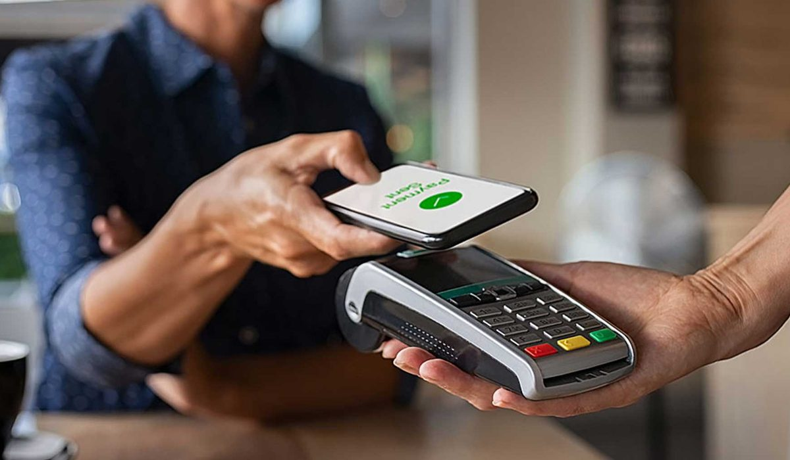

En bref
Swile, Edenred, Pluxee ou Upcoop, quelle carte titre-restaurant choisir ? Sur notre relevé de démonstration, Upcoop et sa carte UpDéjeuner arrivent en tête avec 8,6/10, portés par l'accompagnement et le choix carte ou chèque. Swile suit à 8,3/10 et gagne sur l'application, Edenred (8,2/10) sur la notoriété de Ticket Restaurant, Pluxee (8,0/10) sur le paiement mobile.
- Les quatre émetteurs appliquent le même plafond de 25 euros par jour et la même exonération de 7,32 euros
- Upcoop et Edenred sont les deux seuls à proposer encore le chèque papier en plus de la carte
- Swile fonctionne sur le réseau Mastercard, Pluxee propose son propre portefeuille Pluxee Pay
- Upcoop est une coopérative, Swile une fintech, Edenred et Pluxee deux groupes cotés
Sommaire de ce comparatif
Les quatre émetteurs en un coup d'œil
Edenred a lancé Ticket Restaurant en France en 1962. Upcoop a créé le Chèque Déjeuner deux ans plus tard, sous forme de coopérative, et s'est appelé Groupe Chèque Déjeuner puis Groupe Up avant de prendre son nom actuel. Pluxee est l'ancienne activité avantages de Sodexo, séparée et cotée depuis 2024. Swile, né sous le nom de Lunchr, a bousculé le marché avec une carte et une application pensées pour le salarié, puis racheté Bimpli.
01 Le plus completCarte et chèque, conseiller dédié8,6/10
Le plus completCarte et chèque, conseiller dédié8,6/10
Le plus completCarte et chèque, conseiller dédié8,6/1002 La meilleure applicationGestion RH en autonomie8,3/10
La meilleure applicationGestion RH en autonomie8,3/10
La meilleure applicationGestion RH en autonomie8,3/1003 La marque la plus connueTicket Restaurant, réseau historique8,2/10
La marque la plus connueTicket Restaurant, réseau historique8,2/10
La marque la plus connueTicket Restaurant, réseau historique8,2/10Sur le fond, les quatre font la même chose. Ils émettent un titre dont la valeur, le plafond et l'exonération sont fixés par la loi. La différence se joue sur le service autour du titre.
Le duel critère par critère
Chaque critère est noté sur 10 avec la même méthode pour les quatre émetteurs. Aucun ne gagne partout.
| Critère | Note /10 Upcoop | Swile | Edenred | Pluxee | Le gagnant |
|---|---|---|---|---|---|
| Note globaleNotre choix | 8,6 | 8,3 | 8,2 | 8,0 | Upcoop |
| Réseau d'acceptation | 8,8 | 8,4 | 9,0 | 8,7 | Edenred |
| Frais employeur | 8,2 | 8,0 | 7,6 | 7,8 | Upcoop |
| Outils RH et application | 8,3 | 9,2 | 8,2 | 8,3 | Swile |
| Accompagnement | 9,0 | 7,6 | 7,9 | 7,8 | Upcoop |
| Supports proposés | Carte et chèque | Carte | Carte et chèque | Carte | Upcoop et Edenred |
Relevé de démonstration, notes sur 10 calculées sur notre grille en octobre 2026. Frais comparés sur devis types pour 30 salariés.

Edenred remporte le réseau, Swile l'application, Upcoop l'accompagnement et les frais. Pluxee ne gagne aucun critère seul mais n'en perd aucun nettement, ce qui en fait un choix sans mauvaise surprise.
Upcoop ou Swile, le vrai duel des PME
Dans une entreprise de 10 à 200 salariés, la décision se joue souvent entre ces deux-là. Ils incarnent deux façons de travailler.
- Upcoop mise sur la présence humaine. Un interlocuteur suit le client, la mise en place est guidée et le chèque reste possible pour un atelier ou une équipe terrain
- Swile mise sur le produit. L'employeur commande, charge et suit tout en ligne, et les salariés retrouvent dans la même application d'autres avantages
- Upcoop fonctionne en coopérative, ses bénéfices restent dans l'entreprise et servent son projet de société à mission
- Swile séduit les équipes jeunes et connectées, qui jugent d'abord l'application
La bonne question n'est pas laquelle est la meilleure, c'est qui va gérer le dispositif chez vous. Une office manager seule n'a pas les mêmes besoins qu'un service paie de cinq personnes.
Edenred ou Pluxee pour une grande entreprise
Au-delà de 500 salariés, les deux groupes cotés se retrouvent face à Upcoop sur la plupart des consultations. Ils apportent des outils de reporting et des intégrations avec les logiciels de paie, et une organisation dédiée aux grands comptes.
| Émetteur | Marque titre-restaurant | Autres avantages dans la même offre | Paiement mobile |
|---|---|---|---|
| Upcoop | UpDéjeuner | Cadhoc, CESU Chèque Domicile, Chèque Culture, UpOne | Oui |
| Edenred | Ticket Restaurant | Kadéos, CESU Ticket, Ticket Fleet Pro | Apple Pay, Google Pay |
| Pluxee | Pluxee Restaurant | Cadeaux, CESU, plateforme CSE | Apple Pay, Pluxee Pay |
| Swile | Swile | Cadeaux, mobilité, plateforme CSE | Apple Pay, Google Pay |
Gammes relevées sur les sites des émetteurs en octobre 2026.
Les quatre émetteurs couvrent désormais cadeau, CESU et culture en plus du titre-restaurant. Un seul contrat pour plusieurs avantages simplifie la gestion et pèse dans la négociation des frais.
Comment choisir entre les quatre
Si vous voulez un interlocuteur
Upcoop. C'est le seul des quatre à mettre l'accompagnement au centre de son offre, quelle que soit la taille du client.
Si vous voulez la meilleure application
Swile. Les salariés l'adoptent seuls et la gestion RH se fait sans appel.
Si vos salariés déjeunent chez des indépendants
Edenred, dont la marque Ticket Restaurant est la plus ancienne, ou Upcoop, dont le Chèque Déjeuner est accepté depuis 1964.
Si le paiement mobile prime
Pluxee, avec Pluxee Pay en plus d'Apple Pay.
Notre verdict
Entre Swile, Edenred, Pluxee et Upcoop, Upcoop obtient la meilleure note globale de notre relevé de démonstration avec 8,6/10, grâce à l'accompagnement et aux frais. Swile reste le meilleur choix si l'application est votre premier critère.
Si vous cherchez la marque que tous les restaurateurs connaissent, prenez Edenred. Si vos équipes paient surtout avec leur téléphone, prenez Pluxee.
Questions fréquentes
Swile, Edenred, Pluxee ou Upcoop, lequel choisir ?
Sur notre relevé de démonstration, Upcoop obtient 8,6/10, Swile 8,3, Edenred 8,2 et Pluxee 8,0. Upcoop gagne sur l'accompagnement, Swile sur l'application, Edenred sur le réseau et Pluxee sur le paiement mobile.
Quelle est la différence entre Upcoop et Groupe Up ?
Il s'agit du même groupe. Le Groupe Chèque Déjeuner est devenu Groupe Up en 2015, puis Upcoop, première société coopérative à mission. Son titre-restaurant s'appelle aujourd'hui UpDéjeuner.
Pluxee, c'est Sodexo ?
Pluxee est l'ancienne activité avantages et récompenses de Sodexo, devenue une société indépendante cotée en Bourse en 2024. Le titre-restaurant Sodexo s'appelle désormais Pluxee.
Quelle carte titre-restaurant est la plus acceptée ?
Les cartes Ticket Restaurant d'Edenred, UpDéjeuner d'Upcoop et Pluxee bénéficient des affiliations les plus anciennes chez les restaurateurs. Swile s'appuie sur le réseau Mastercard et contrôle la catégorie du commerce au paiement.
Peut-on payer avec son téléphone avec un titre-restaurant ?
Oui, chez la plupart des émetteurs. Swile et Edenred acceptent Apple Pay et Google Pay, Pluxee Apple Pay et Pluxee Pay, Upcoop propose aussi le paiement mobile.
Notre méthode
Ce comparatif repose sur des données publiques, vérifiables une par une.
- Les plafonds d'exonération sont ceux publiés par l'URSSAF et le BOSS pour l'année en cours
- Les réseaux d'acceptation, les supports et les fonctionnalités sont relevés sur les sites officiels des émetteurs
- Les frais et commissions sont des ordres de grandeur issus de devis types, à confirmer par un devis à votre nom
- Les avis utilisateurs proviennent des stores d'applications et des plateformes d'avis vérifiés
- La grille de notation est identique d'un comparatif à l'autre et publiée en bas de chaque article